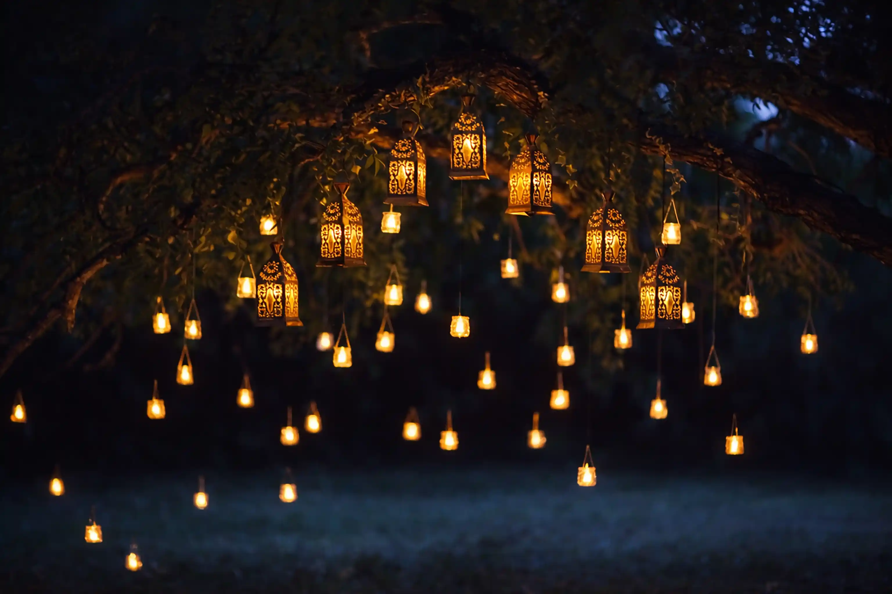

Every year, as dusk settles and the sky deepens into velvet blue, thousands of lanterns rise into the night. Soft, glowing, weightless. The Lantern Festival is more than a visual spectacle. It is a collective ritual of hope, intention, and renewal. And in many ways, it has quietly shaped the way we experience candlelight today.
Traditionally celebrated across parts of Asia, particularly in China and Thailand, the Lantern Festival marks closure and new beginnings. Each lantern carries wishes written by hand, lifted upward by warm air and belief. The sky becomes a living constellation, filled not with distant stars, but with human longing made visible.
At its heart, the festival is about shared light. One flame alone is gentle. Thousands together transform the atmosphere entirely. This emotional power of illumination has influenced modern candle culture more than we often realize.
Today, candles are no longer just practical sources of light. They are expressions of mood, intention, and identity. Just as lanterns once symbolized prosperity, harmony, and spiritual clarity, candles now represent calm, mindfulness, and personal ritual. Lighting a candle at home echoes the same instinct that sends a lantern into the sky: the desire to mark a moment.
The visual language of the Lantern Festival also inspires contemporary design. Warm amber glows, soft diffusion of light, and organic movement are qualities that modern candle makers seek to recreate. A well-crafted candle flame should feel alive, steady yet dynamic, casting gentle shadows that shift and breathe. The goal is not brightness, but atmosphere.
There is also a deeper connection rooted in ritual. During the festival, releasing a lantern is intentional. It is done slowly, thoughtfully, often in silence. Similarly, modern candle culture embraces slowness. We light candles to begin meditation, to accompany evening meals, to soften transitions between work and rest. The act becomes symbolic. A signal to pause.
Fragrance adds another dimension. While lanterns illuminate the sky, candles illuminate the senses. Scented wax transforms light into experience. The glow remains visual, but the aroma extends the ritual inward. This layered sensory engagement reflects the emotional richness found in traditional festivals of light.
Even the communal aspect has evolved rather than disappeared. Social gatherings, intimate dinners, and shared celebrations often center around candlelight. Just as lantern festivals unite communities under a glowing sky, candles gather people around a table, a living room, a shared space of warmth.
In a fast, digital world, the return to light as ritual feels meaningful. The Lantern Festival reminds us that illumination can carry emotion. Modern candle culture translates that lesson into everyday life. We may no longer release paper lanterns into the night, but we continue to celebrate light in smaller, more intimate ways.
From sky-bound lanterns to flickering flames on a bedside table, the message remains constant. Light connects us. Light comforts us. And in every glow, there is a quiet celebration of being present.
